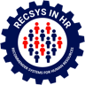
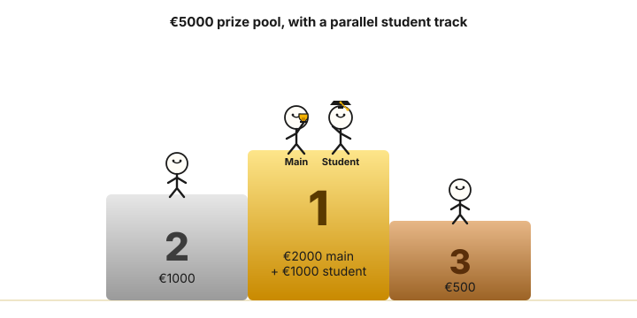

Push the limits of large-scale skill intelligence, and take home a share of €4500.
Part of the 
Do you want to push the limits of large-scale skill intelligence? Or are you just excited to take home a share of the €4500 prize money?
Skill intelligence still isn’t solved. ESCO has more than 13,000 labels, annotation in this space is far from complete, and the binary yes/no labels used by most published skill-extraction benchmarks routinely miss true positives and treat a near-miss the same as pure nonsense. The result: lexical shortcuts and overfitted classifiers can score as well as systems that genuinely understand the skill space, and the field ends up rewarding the wrong behaviour.
This challenge gives you a sharper instrument. We take the popular open-source skill-extraction and skill-normalisation benchmarks (House, Tech, TechWolf, SkillSkape, SkillNorm) and re-annotate them with graded relevance across five interpretable levels, then release the new annotations to the community (see Evaluation for the label definitions). Your task: recommend the right ESCO skills from free-form text, and normalise extracted skills to the right ESCO concepts.
Everything runs through the open-source WorkRB toolbox: it standardises ranking outputs, generates and scores every submission, and is the same evaluation backbone you can keep using for your own work long after this challenge ends.
The starter repository contains detailed instructions to quickly bring you up to speed with state-of-the-art baselines and the contributions of this challenge. The development environment lowers the barrier to entry, so anyone can start experimenting with their own ideas (though basic familiarity with machine learning helps 😉).

If the best student team finishes in the top 2, the 3rd-place team receives €1000 and the 4th-place team receives €500.
* As the sponsor is based outside the US, a small withholding tax may be applied to payouts.
The task is skill extraction and skill normalisation against ESCO, scored with graded relevance through the WorkRB toolkit. The starter repository ships a hello-world training setup, baselines, and a knowledge notebook so you can get to a first submission quickly.
Any open-source dataset is allowed, except for the ones used in the test set (see Rules). The starter scripts already include TechWolf’s synthetic ESCO skill sentences. The SOTA notebook lists further useful skill-extraction datasets, but don’t let the starter files limit your imagination. Maybe regularising with non-skill extraction data helps semantic understanding 👀
Open-source skill-extraction and skill-normalisation validation sets, enriched with graded-relevance annotations, are available now as new tasks inside WorkRB. While the validation phase is closed, you can still generate your validation score locally using WorkRB.
The graded-relevance test annotations are kept hidden during the challenge and will be released through WorkRB after submissions close.
The challenge uses a ranking metric, which means your model must be able to return an ordered list of predictions. This does not restrict you to similarity-based solutions: a classifier can return skills ordered by logits or output probabilities.
nDCG normalises $\mathrm{DCG}@k$ by the ideal $\mathrm{DCG}@k$, giving a score in $[0, 1]$. Given the sparse annotations, we decided to define k as the total target space size per task.
Every (query, skill) pair is assigned one of five graded relevance levels. The levels are defined as follows:
| Level | Meaning |
|---|---|
| 4 | Correct: originally a positive in the binary-labelled dataset, or a direct replacement of it. |
| 3 | Strongly relevant: the skill is clearly implied by the query, even if not literally named. |
| 2 | Adjacent: the skill could reasonably be recommended but is not core to the query (granularity off). |
| 1 | Plausible: the skill fits the broader domain but is not mentioned or implied (activity off). |
| 0 | Nonsense: wrong domain entirely. |
Queries are drawn from popular open-source skill-extraction and skill-normalisation benchmarks: House, Tech, TechWolf, SkillSkape, and SkillNorm. We re-annotate them with the graded-relevance levels above and release the new annotations to the community through WorkRB: the validation set is available now, and the test set counterpart is published after the challenge ends.
The final score is a macro-average of the nDCG@100 scores.
| When | What | Description |
|---|---|---|
| 2 Jun 2026 | Challenge resources launch | Rules, training data, hello-world training setup, and knowledge notebook are out. Registration is open on CodaBench. The WorkRB validation tasks and submission system are live, with no submission cap during the validation phase. |
| 24 Jun 2026 (now live) | Test submissions open | The validation phase has closed and the test phase is open. Submit your test rankings on CodaBench, where the leaderboard is now live. This is the only place to see your score. Evaluation can take around 20 minutes per submission, which is normal. |
| 31 Jul 2026 | Submissions close | Every team submits their training code (kept confidential, not judged on quality) so we can collect insights from every approach, not only the winners. The organisers then begin work on the summary paper. Submitters whose approach surfaces something scientifically interesting (think data, compute, or cost efficiency, or genuine novelty, not just a high score) will be invited to either publish an arXiv version themselves or be cited by a self-chosen name. |
| Sep 2026 | Summary paper on arXiv | Summary paper published, citing the arXiv works of top performers and naming the systems they describe. |
| RecSys-HR workshop | Workshop & awards | Top-3 teams get a 5-minute pitch slot at RecSys-HR, one of the largest recommender-systems workshop tracks. Invitations to the poster session are not limited to the leaderboard top: teams whose approach is scientifically interesting are just as likely to be invited, judged subjectively on dimensions such as data efficiency, compute efficiency, cost efficiency, and novelty. A lean, clever system can earn its place over a heavier one that merely ranks higher. |
git clone and run
the example notebook end-to-end.
Stuck on something or want to flag an issue? Email recsys-hr-challenge@techwolf.ai.
Any violation excludes you from both the main and the student prize tracks.
Challenge-specific questions: recsys-hr-challenge@techwolf.ai
WorkRB toolkit, integrations, research collaborations: workrb@techwolf.ai